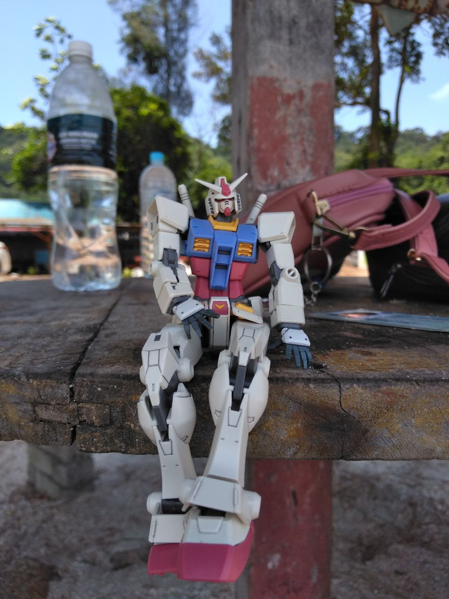

GALLERY
Anime Boy
One of my art that is being used for practice.

Gundam
The first picture of Gundam that I have taken.
Eid al-Fitr
The first day of Eid al-Fitr 2023
Outing
Watching movie with Umai.
Izzati
One of my best friends at primary school.
Fel
The most open-minded and happy-go-lucky person.
Lala
One of my best friends at primary school too.
Curriculum
Waiting for our commander to arrive.

Umai
The loyal person.